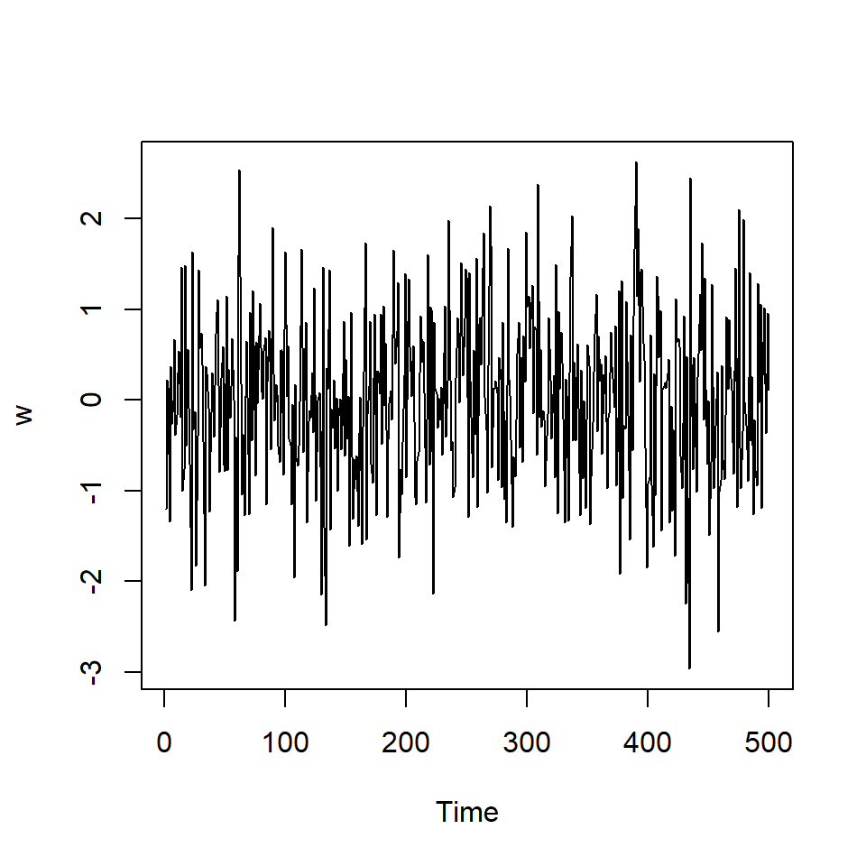

Tema 1: Análisis espectral de series temporales-1
Curso: Tópicos Avanzados de Series Temporales
Contenido
- Introducción: modelos de series temporales, procesos estacionarios y no estacionarios, función de autocovariancia, ARIMA
- Comportamiento cíclico y periodicidad.
- Función de densidad espectral.
- Representación espectral de procesos estacionarios
- Estimación de periodograma.
- Estimaciones en el dominio de frecuencia.
- Aplicaciones del análisis espectral.
1. Introducción
Repaso de conceptos claves: - Modelos de series temporales - Procesos estacionarios y no estacionarios - función de autocovariancia - Proceso lineal - ARIMA
Modelos de series temporales
El principal objetivo del análisis de series temporales es construir modelos matemáticos que proporciona una descripción de los datos muestreados (ordenado en el tiempo).
Además, sirve para realizar inferencia del comportamiento en el intervalo observado o a futuro.
Modelos de series temporales
Considere una serie temporal como una secuencia de variables aleatorias \[X_1,X_2,..,X_t,...\]
Proceso estocástico: una colección de variables aleatorias indexada por un conjunto \(\mathcal{T}\), \[\left\lbrace X_t, t \in \mathcal{T} \right\rbrace\]
Vamos a enfocar el caso cuando \(\mathcal{T}\) es un conjunto discreto, i.e. \(t=0,1,2,...\).
Figura tomada en Morettin (2017)
Modelos de series temporales
- Un modelo de series temporales generalmente especifica la distribución conjunta de la secuencia \(X_t\). \[P\left(X_1\leq x_1, X_2\leq x_2,...,X_t \leq x_t \right)\]
- Una observación de un proceso estocástico es una serie de valores observados en el tiempo y es llamada una realización de un proceso estocástico.
Figura tomada en Morettin (2017)
Ruido blanco
Una colección de variables aleatorias no correlacionadas, \(w_t\), con media 0 y variancia \(\sigma_w^2\).
Denotado por \(w_t \sim wn(0,\sigma_w^2)\).
Si una secuencia de variables es i.i.d., i.e. \(w_t \sim iid(0,\sigma_w^2)\), entonces \(w_t \sim wn(0,\sigma_w^2)\). ¡El inverso no es cierto!
Sin embargo, si un ruido blanco es Gaussiano, entonces \(w_t \overset{iid}{\sim} N(0,\sigma_w^2)\).
Ruido blanco
- Ruido blanco Gaussiano: para cualquier \(t\) entero positivo \[P\left(w_1\leq c_1,...,w_t \leq c_t \right)=\] \[P\left(w_1\leq c_1 \right) \cdots P\left(w_t \leq c_t \right)\] donde \(w_j \sim N(0,\sigma^2)\) para \(1\leq j\leq t\) entero positivo.
- Simulación de una colección de \(w_t \sim N(0,1)\) con \(T=500\).
Medidas de dependencia
- Una descripción completa de un modelo de series temporales es proporcionado por la distribución de probabilidad conjunta, i.e. dados tiempos arbitrarios \(t_1,...,t_n\) para \(n\) entero positivo y \(c_1,...,c_n\) n valores constantes:
\[F_{t_1,...,t_n}(c_1,...,c_n)=P\left(X_1\leq c_1, X_2\leq c_2,...,X_t \leq c_t \right)\] - Aunque esa distribución describe los datos globalmente, en la práctica, esa distribución multidimencional es dificil de conocer, excepto cuando es normal multivariado (¿por qué?)
- La distribución marginal en el tiempo \(t\), \[F_t(x)=P(X \leq x)\]
- La función densidad marginal en el tiempo \(t\), \[f_t(x)= \frac{\partial F_t(x)}{\partial x}\]
Medidas de dependencia
- La función de media para el tiempo \(t\) es definida por
\[\mu_t= E(X_t)=\int_{-\infty}^\infty f_t(x)dx\]
- La función de autocovariancia es definida por
\[\gamma_X(t,s)=\gamma(t,s)= Cov(X_t,X_s)=E\left[ (X_t-\mu_t)(X_s-\mu_s) \right]\] - Mide la dependencia lineal entre dos puntos de tiempo de la misma serie.
- La función de variancia en el tiempo \(t\) es definida por \[\gamma_X(t,t)=Var(X_t)\]
Medidas de dependencia
- La función de autocorrelación es definida por
\[\rho_X(t,s)=\frac{\gamma(t,s)}{\sqrt{\gamma(t,t)\gamma(s,s)}}\]
Procesos estacionarios
Definición: Un proceso estrictamente estacionario es un proceso estocástico cuyo comportamiento de cada colección de valores \[\left\lbrace X_{t_1},X_{t_2},...,X_{t_k} \right\rbrace\] es idéntico a un conjunto bajo un cambio de tiempo \[\left\lbrace X_{t_1+h},X_{t_2+h},...,X_{t_k+h} \right\rbrace.\] Esto es, \[P\left(X_{t_1} \leq c_1,...,X_{t_k} \leq c_k \right)=P\left(X_{t_1+h}\leq c_1,...,X_{t_k+h} \leq c_k \right)\] para todo \(k=1,2,...\), todo tiempo \(t_1,...,t_k\), todas las constantes \(c_1,...,c_k\) y todos los cambios de tiempo \(h=0, \pm 1, \pm 2,...\).
Procesos estacionarios
Definición: un proceso débilmente estacionario es un proceso con variancia finita tal que 1. la función de la media es constante \[\mu_t=E(X_t)=\mu\]
- La función de autocovariancia depende solamente de la diferencia de dos puntos \(t, t+h\) \[\gamma(t,t+h)=Cov(X_t,X_{t+h})=Cov(X_0,X_h):=\gamma(h).\]
Consecuentemente, la función de autocorrelación de un proceso estacionario es definido como
\[\rho(h)=\frac{\gamma(t,t+h)}{\sqrt{\gamma(t+h,t+h),\gamma(t,t)}}=\frac{\gamma(h)}{\gamma(0)}.\] - En la práctica, se refiere simplemente a un proceso estacionario.
Estimación
- Si una serie es estacionaria, la media \(\mu_t=\mu\) es constante y podemos estimarla usando la media muestral
\[\bar{X}=\frac{\sum_{t=1}^T X_t}{T}\] - Resultados teóricos: se puede probar que \[E\left[\bar{X}\right]=\mu\] \[ Var\left[\bar{X}\right]=\frac{1}{T} \sum_{h=-n}^n \left(1-\frac{|h|}{T} \right) \gamma_X(h) \]
Estimación
Entonces, la función de autocovariancia muestral es definida por \[\hat{\gamma}_X(h)=\frac{1}{T}\sum_{t=h+1}^{T} (X_{t}-\bar{X})(X_{t-h}-\bar{X}),\] con \(\hat{\gamma}_X(-h)=\hat{\gamma}_X(h)\) para \(h=0,1,...,T-1\).
La función de autocorrelación muestral es definida por \[\hat{\rho}_X(h)=r_X(h)=r_h=\frac{\hat{\gamma}_X(h)}{\hat{\gamma}_X(0)}\]
\[=\frac{\sum\limits_{t=h+1}^{T} (X_{t}-\bar{X})(X_{t-h}-\bar{X})}{\sum\limits_{t=1}^{T} (X_{t}-\bar{X})^2}\]
Estimación
Propiedad:
Si \(X_t\) tiene sus primeros 4 momentos finitos, y \(X_t\) es ruido blanco, entonces para \(T\) suficientemente grande, la función de autocorrelación \(\hat{\rho}_X(h), h=1,2,..., H\) donde \(H\) es un valor cualquier pero fijo, es aproximadamente normal con media cero y desviación estándar \[\sigma_{\hat{\rho}_X(h)}=\frac{1}{\sqrt{T}}.\]
Nota:
- Con este resultado, si se tiene un ruido blanco, entonces se espera que con aproximadamente 95% de confianza, las \(\hat{\rho}_X(h)\) deberían caer dentro del intervalo \(\left( \frac{-2}{\sqrt{T}},\frac{2}{\sqrt{T}} \right)\). puede estimar intervalos de confianza e identificar aquellos rezagos que tienen autocorrelación significativa.
- En la práctica, se grafica los pares ordenados \((h,r_h),h=1,2,...\) para visualizar la función de aucorrelación muestral. Este gráfico se denomina correlograma.
Ruido blanco:
- Si \(w_t \sim wn(0,\sigma_w^2)\), la función de autocorrelación es
\[\rho_w(t,s)=\left\lbrace \begin{aligned} 1, & & t = s \\ 0, & & t \neq s, \end{aligned} \right.\]
o
\[\rho_w(h)=\left\lbrace \begin{aligned} 1, & & h = 0 \\ 0, & & h \neq 0, \end{aligned} \right.\]
La función de autocorrelación estimada de 500 observaciones de \(w_t \overset{\text{iid}}{\sim} N(0,1)\).

Medias móviles
Considere el ejemplo de medias móviles: \(v_t=\frac{1}{3}(w_{t-1}+w_{t}+w_{t+1})\)
La función de autocovariancia es definida por
\[\gamma_v(t,t+h)=Cov(v_{t},v_{t+h})\]
Caso 1 \((h=0)\):
\(\gamma_v(t,t+0)=Cov(v_{t},v_{t+0})=Var(v_t)\)
\(=\frac{1}{9}Var(w_{t-1}+w_{t}+w_{t+1})=\frac{3}{9} Var(w_t)=\frac{1}{3} \sigma_w^2.\)Caso 2 \((h=1)\):
\(\gamma_v(t,t+1)=Cov(v_{t},v_{t+1})\)
\(=Cov\left[\frac{1}{3}(w_{t-1}+w_{t}+w_{t+1}),\frac{1}{3}(w_{t}+w_{t+1}+w_{t+2})\right]\)
\(=\frac{1}{9}\left[ Cov(w_{t},w_{t})+Cov(w_{t+1},w_{t+1}) \right]\)
\(=\frac{2}{9}\sigma_w^2\)
- Caso 3 \((h=-1)\): Similarmente se obtiene \(\gamma_v(t,t-1)=\frac{2}{9}\sigma_w^2\)
Medias móviles
Caso 4 \((h=2~o~h=-2)\):
\[\gamma_v(t,t+2)=\gamma_v(t,t-2)=\frac{1}{9}\sigma_w^2\]
Caso 5 \((h>2~o~h<-2)\):
\[\gamma_v(t,t+h)=0.\]
Entonces, \[\gamma_w(t,t+h)=\left\lbrace \begin{aligned} \frac{3}{9}\sigma_w^2, & & h = 0 \\ \frac{2}{9}\sigma_w^2, & & |h| = 1 \\ \frac{1}{9}\sigma_w^2, & & |h| = 2 \\ 0, & & |h| > 2, \end{aligned} \right.\]
Medias móviles
Ejemplo de medias móviles:
- Su función de autocorrelación es \[ \rho_v(h)=\left\lbrace \begin{aligned} 1, & & h = 0 \\ \frac{2}{3}, & & |h| = 1 \\ \frac{1}{3}, & & |h| = 2 \\ 0, & & |h| > 2, \end{aligned} \right. \]

]
Proceso lineal
- Un proceso lineal, \(X_t\) es definido como una combinación lineal de los ruidos blancos \(w_t\) y es dado por:
\[X_t=\mu+\sum_{j=-\infty}^{\infty}\psi_j w_{t-j},~~~ \sum_{j=-\infty}^{\infty}|\psi_j| < \infty.\] - Se puede demostrar que su FAC es dada por \[\gamma_X(h)=\sigma_w^2 \sum_{j=-\infty}^{\infty}\psi_{t+h}\psi_j,~~~ \text{para } h \geq 0\] - Para el ejemplo anterior de medias móviles, note que es un caso particular con \(\psi_0=\psi_{-1}=\psi_{1}=1/3\).
Proceso lineal
- Concentremos en un modelo lineal con \(\psi_j=0,~~ \text{para}~~j<0\), i.e.
\[X_t=\mu+\sum_{j=0}^{\infty}\psi_j w_{t-j},~~~ \sum_{j=0}^{\infty}|\psi_j| < \infty.\]
- Se puede demostrar que es estacionario con:
\[E(X_t)=\mu,~~~\gamma_X(h)=\sigma_w^2 \sum_{j=0}^{\infty}\psi_{t+h}\psi_j,~~~ \text{para } h \geq 0\]
- Note que tiene forma de \(MA(\infty)\) y se puede presentarlo como:
\[\tilde{X}_t=X_t-\mu={\psi}(B)w_t\] donde \(\psi(B)=1+ \psi_1 B+ \psi_2 B^2+...\) es el operador de medias móviles de orden infinito.
Invertibilidad
El interés es expresar una serie tepmoral \(X_t\) en término de sus valores pasados \(X_{t-i}\) para \(i>0\).
Una serie temporal estacionaria \(X_t\) es invertible si se puede expresar como: \[X_t=c+w_t+\sum_{j=1}^\infty \phi_j X_{t-j}\] donde \(c\) es un vector constante, \(\phi_j,~j>0\) constantes, y \(\left\lbrace w_{t}\right\rbrace\) es ruido blanco con variancia \(\sigma_w^2\).
Representaciones de un modelo lineal
A partir de un modelo lineal estacionario e invertible: \[X_t-\sum_{j=1}^\infty \phi_j X_{t-j}=c+w_t\]
Calculemos la esperanza en ambos lados, se obtiene: \(\mu-\mu \sum_{j=1}^\infty \phi_j =c\)
Sustituimos \(c\) en la ecuación anterior
\[X_t-\sum_{j=1}^\infty \phi_j X_{t-j}=\mu-\mu \sum_{j=1}^\infty \phi_j + w_t\] \[\Rightarrow (X_t-\mu) - \left(\sum_{j=1}^\infty \phi_j X_{t-j}- \sum_{j=1}^\infty \phi_j \mu \right)= w_t\]
Representaciones de un modelo lineal
- Podemos reescribir el modelo como:
\[\tilde{X}_t-\sum_{j=1}^\infty \phi_j \tilde{X}_{t-j}=w_t\] donde \(\tilde{X}_t=X_t-\mu\).
- Conocida como la representación de una serie temporal centrada, y es posible representarla como: \[\phi(B)\tilde{X}_t=w_t\]
donde \(\phi(B)= 1- {\phi}_1 B-{\phi}_2 B^2-...\) es el operador autorregresivo de orden infinito.
Representaciones de un modelo lineal
- Recordemos que un proceso lineal estacionario tiene esta representación:
\[\tilde{X}_t={\psi}(B)w_t\] - Y un proceso invertible: \[\phi(B)\tilde{X}_t=w_t\] - Insertamos las dos ecuaciones: \[\phi(B){\psi}(B)w_t=w_t\] o bien
\[\left(1- \phi_1 B- \phi_2 B^2-... \right) \left(1+ \psi_1 B+ \psi_2 B^2+... \right)w_t=w_t\]
Representaciones de un modelo lineal
De esta forma, \[\left(1- \phi_1 B- \phi_2 B^2-... \right) \left(1+ \psi_1 B+ \psi_2 B^2+... \right)=1\]
Esto implica que todos los coeficientes que acompañan a \(B^i~,i>0\) debe ser cero.
\[\left. \begin{eqnarray} & \psi_1-\phi_1 & = & 0 \\ & \psi_2-\psi_1\phi_1-\phi_2 &= & 0 \\ & \psi_3-\psi_1\phi_2-\psi_2\phi_1-\phi_3 & = & 0 \\ &\vdots &=& \vdots \end{eqnarray}\right.\]
- De esta forma, se puede obtener representaciones diferentes (AR o MA) de un modelo lineal.
Ejemplo:
Considere un modelo AR(1): \(\phi(B)\tilde{X}_t=w_t\) donde \(\phi(B)= 1- {\phi}_1 B\).
Para obtener su representación \(MA(\infty)\), tenemos que \[\left(1- \phi_1 B \right) \left(1+ \psi_1 B+ \psi_2 B^2+... \right)=1\]
Abriendo la expresión: \[ \left(1- \phi_1 B \right) + \left(1- \phi_1 B \right) \psi_1 B + \left(1- \phi_1 B \right) \psi_2 B^2 \] \[+ \left(1- \phi_1 B \right) \psi_3 B^3 +... = 1\]
\[\Rightarrow 1- \phi_1 B + \psi_1 B- \phi_1 \psi_1 B^2 + \psi_2 B^2- \phi_1 \psi_2 B^3 \] \[\psi_3 B^3- \phi_1 \psi_3 B^4 + ... = 1\]
Ejemplo:
\[\Rightarrow 1+ (\psi_1-\phi_1) B+ (\psi_2- \phi_1 \psi_1) B^2 + (\psi_3- \phi_1 \psi_2) B^3 + ... = 1\]
- lo cual significa que:
\[\left. \begin{eqnarray} & \psi_1-\phi_1 & = & 0 \\ & \psi_2-\psi_1\phi_1 &= & 0 \\ & \psi_3-\psi_2\phi_1& = & 0 \\ &\vdots &=& \vdots \end{eqnarray}\right.\]
- La representación de \(AR(1)\) como \(MA(\infty)\) es:
\[\psi_1=\phi_1,~\psi_2=\phi_1^2,~\psi_3=\phi_1^3,~...\] - O sea:
\[X_t-\mu=\sum_{j=0}^{\infty}\phi_1^j w_{t-j}.\]
ARMA(p,q)
El modelo lineal con representación AR y MA de orden infinito es elegante pero dificulta el proceso de la estimación involucrando infinitos coeficientes.
El modelo de nuestro interés se centra en modelos que se pueden representar por medio de una cantidad finita de coeficientes.
\(X_t\) sigue un proceso ARMA(p,q) si satisface la siguiente ecuación:
\[\phi(B) \tilde{X}_t =\theta(B)a_t.\] donde:
\(\tilde{X}_t = (X_t-\mu_X)\), es decir \(\tilde{X}_t\) está centrada en cero.
\(\phi(B)=1-\phi_1 B -\phi_2 B^2-...-\phi_p B^p\) es el operador autorregresivo.
\(\theta(B)=1-\theta_1 B-\theta_2 B^2-...-\theta_q B^q\) es el operador de medias móviles.
Condiciones de estacionariedad e invertibilidad de ARMA(p,q)
La condición de estacionariedad se verifica con la ecuación característica del proceso autoregresivo \[\phi(B)=1-\phi_1 B -\phi_2 B^2-...-\phi_p B^p=0.\]
Si las raíces características de la ecuación característica están fuera del círculo unitario, el proceso AR(p) es estacionario.
De forma similar, la condición de invertibilidad se verifica con la ecuación característica del proceso de medias móviles
\[\theta(B)=1-\theta_1 B-\theta_2 B^2-...-\theta_q B^q=0.\] - Si las raíces características de la ecuación característica están fuera del círculo unitario, el proceso MA(q) es invertible.
ARIMA(p,d,q)
En la práctica, muchas series son no estacionarias pero las diferencias consecutivas de orden \(d\) puede llegar a una serie estacionaria.
Sea \[\tilde{W}_t=\nabla^d \tilde{Z}_t=(1-B)^d \tilde{Z}_t\] la diferencia consecutiva de orden \(d\) de la serie \(\tilde{Z}_t\).
Suponga que después de realizar estas \(d\) diferencias \(\tilde{W}_t\) puede ser representado por un proceso ARMA(p,q), i.e.
\[(1-\phi_1 B -\phi_2 B^2-...-\phi_p B^p)\tilde{W}_t=(1-\theta_1 B-\theta_2 B^2-...-\theta_q B^q)a_t,\] O equivalentemente,
\[(1-\phi_1 B -\phi_2 B^2-...-\phi_p B^p)(1-B)^d \tilde{Z}_t=\] \[(1-\theta_1 B-\theta_2 B^2-...-\theta_q B^q)a_t.\]
ARIMA(p,d,q)
- Usando las notaciones del operador de diferencia, autoregresivo \(\phi(B)\) y de medias móviles \(\theta(B)\), sea \[\tilde{W}_t=\nabla^d \tilde{Z}_t=(1-B)^d \tilde{Z}_t\] la diferencia consecutiva de orden \(d\) de la serie \(\tilde{Z}_t\).
\[\phi(B)\nabla^d \tilde{Z}_t=\theta(B)a_t.\] donde:
\(\phi(B)=1-\phi_1 B -\phi_2 B^2-...-\phi_p B^p\) es el operador autorregresivo.
\(\theta(B)=1-\theta_1 B-\theta_2 B^2-...-\theta_q B^q\) es el operador de medias móviles. \(\nabla^d=(1-B)^d\) es el operador de \(d\) diferencias.
Este modelo es denominado modelo autoregresivo integrado de promedios móviles (en inglés: AutoRegressive Integrated Moving Average model).
Se denota con ARIMA(p,d,q).
ARIMA(p,d,q)
- El término “integrado” proviene del hecho de que cuando \(d=1\), \(Z_t\) se puede presentar como la suma: \[Z_t=W_t+W_{t-1}+W_{t-2}+...,\] i.e. obtener \(Z_t\) sumando (integrando) del proceso estacionario \(W_t\).
\[W_t+W_{t-1}+W_{t-2}+...\] \[=(Z_{t}-Z_{t-1})+(Z_{t-1}-Z_{t-2})+(Z_{t-2}-Z_{t-3})+...\] \[=Z_{t}~~~~~~~~~~~~~~~~~~~~~~~~~~~~~~~~~~~~~~~~~~~~~~~~~~\]